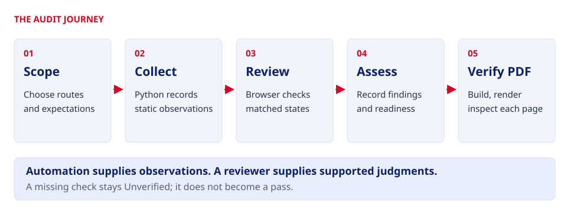
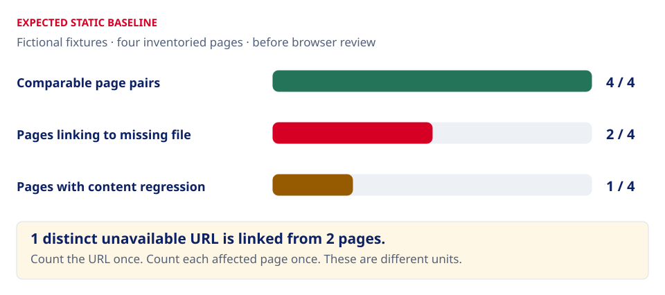
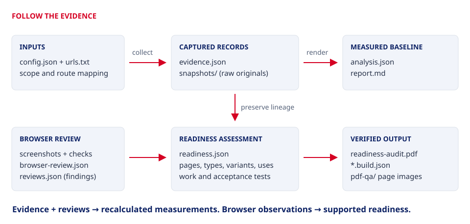
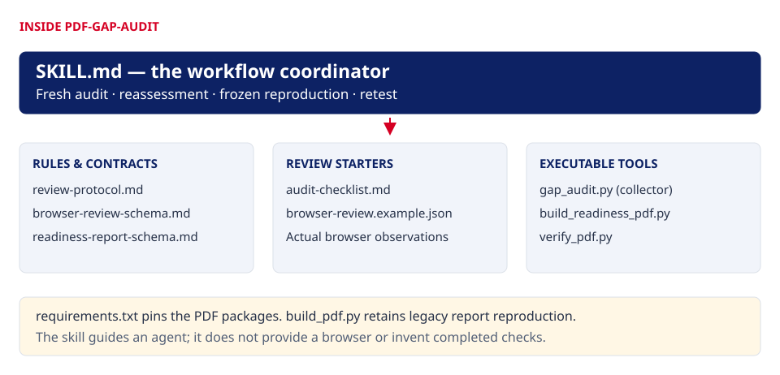
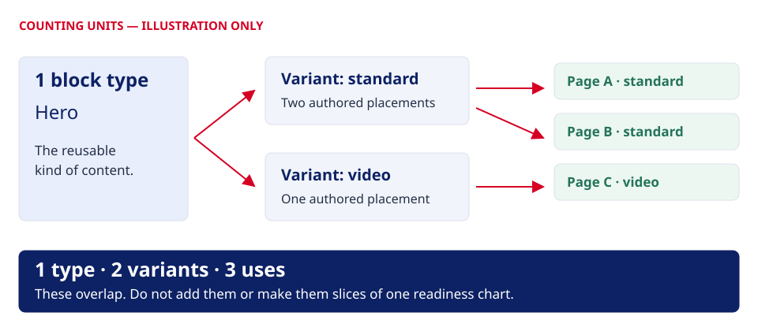

Learn by running a real example
Your first audit.
Every step explained.
Two fictional websites. Four pages. A few deliberate migration defects. Collect the evidence yourself, see what the numbers mean, and follow the files all the way to a reviewed PDF.
Python 3.10+ · No API key or extra packages for the initial audit · Runs locally · PDF review is an optional extension
See a completed audit: finished PDF, screenshots and explained outputs from every step →
Continue with the repaired copy: before-and-after screenshots and a fresh retest →
01 / The big picture
One journey, three kinds of work
Python collects. It requests pages, compares their static content and records linked-resource availability. A reviewer verifies. A person or browser-capable agent checks the rendered experience and required actions. The skill guides reporting. It tells an agent how to preserve evidence, assess readiness, build a PDF and verify the result.

The first stopping point
Run the sample collector and understand report.md. This needs only Python and a browser. You can stop with a useful, clearly bounded static baseline.
The complete learning path
Perform the browser exercises, record findings, then give the run to an agent with the bundled skill. PDF generation needs the pinned packages; visual PDF verification also needs Poppler.
02 / Your first run
Download, extract, start
Open the kit folder in a terminal
Extract the entire practice ZIP. Keep its folders together. Open a terminal in the extracted top-level folder, where
START-HERE.html,tools/,practice/andskills/sit side by side. You can also openSTART-HERE.htmldirectly to read this walkthrough offline.python3 --versionYou need Python 3.10 or later. On Windows, use
py -3instead ofpython3if that is your launcher. Enter these commands in a terminal, not in Python’s>>>prompt.Start both websites and collect
python3 practice/run_demo.py start --out runs/practice-01This starts two servers bound to
127.0.0.1, prepares the four-route inventory and route mapping, calls the real collector, then keeps the websites open. The terminal prints both addresses and the report location. Leave it running while you compare the websites.Original / sourceNorthstar Learning Hubhttp://127.0.0.1:8851/Migrated / targetThe version to assesshttp://127.0.0.1:8852/Open those addresses in your browser. If you selected custom ports, use the addresses printed by your run. These are local sample sites, not public URLs.
Open the saved report
In your editor or Markdown viewer, open
runs/practice-01/report.md. Openanalysis.jsonbeside it to connect each headline number to its structured value. The runner also savesdemo-inputs/config.json,demo-inputs/urls.txtand the exercise’sscope.md.The report is a file; the sample website server does not serve the run directory. Use your file browser/editor to open it.
What the runner does behind the scenes
practice/run_demo.py locates the kit relative to its own file, starts one server per sample tree, creates temporary collector inputs, and imports tools/gap_audit.py. After collection, it saves copies of those inputs inside the new run. Raw inventory inputs and page bodies are already preserved by the collector. No AI call, package installation or browser testing happens automatically.
Use start --once to collect and stop immediately, or serve to open the same fixtures without collecting. The default ports are 8851 and 8852; --source-port and --target-port change them. Existing audit folders are refused.
03 / Read your baseline
Know what you should find
The sample has four inventoried routes. All four source/target HTML pairs can be compared. One target download is missing; two pages link to that same URL. Resources loses its heading and preparation guidance. Contact keeps its text but contains a narrow-screen CSS defect.

| Source → target | Static content result | What to investigate |
|---|---|---|
/ → / | Good | The checklist link returns 404 on target. Content and resource availability are separate. |
/resources/ → /resources/ | Review | Missing H1 and guidance; the same broken checklist link appears here too. |
/contact/ → /contact/ | Good | At 390px, target’s contact panel is 760px wide. Static text comparison cannot detect this layout problem. |
/guide/ → /help/ | Good | An intentional move handled by routeMap. Test the disclosures rather than treating the new path as missing. |
The initial confirmed finding count is zero. Automated flags are review candidates. A reviewer still needs to establish the defect, impact, priority and acceptance test. The answer key is also included as practice/expected-results.md.
Read the labels carefully
Good: no automated content flags. Review: a content difference or comparison limitation needs checking. Critical: an explicit content-fidelity override supported by a confirmed P0 content or functional finding. Unverified: no usable source/target comparison. Resource failures remain independent of those content labels.
404/410 means unavailable at capture time. A timeout, access block or other unsuccessful response remains unverified. HTTP 200 may still be a wrong page or soft error. Text similarity below 90%, heading coverage below 90% and link-label coverage below 95% trigger review; they are not visual or completion scores.
04 / Check the rendered experience
Turn a signal into an observation
Open source and target side by side. Match viewport, scroll position and interaction state before comparing. The exercise asks for 1440×900 and 390×844. Enter these in your browser’s responsive controls where available; record the actual dimensions if you use another size.
- Home: follow the checklist link on source and target. Source should return the sample checklist; target should return 404. Save what you actually observe.
- Resources: compare the top heading and introductory guidance. Follow the download link again. It is a second affected page, not a second unique failed URL.
- Contact: compare both sizes. At 390px, investigate the target’s horizontal overflow. This is the key lesson: matching text can accompany a visibly broken layout.
- Guide/help: open each disclosure with a mouse, then use Tab to focus its summary and Enter/Space to toggle it. Repeat on both sites. Native HTML behavior still needs checking.
- Shared navigation: follow the links on both sites and record any remaining checks. Do not send messages to the fictional contact address.
Capture enough context to repeat the check
Keep screenshot originals in runs/practice-01/browser/. For each pair, record URL, viewport, state, capture time and SHA-256. In browser-review.json, record browser/version, reviewer, actual actions, expected result, observed result and evidence references. Use actual page IDs from this run.
Hash a saved screenshot with this portable Python command, replacing the filename:
python3 -c "import hashlib,pathlib; print(hashlib.sha256(pathlib.Path('runs/practice-01/browser/home-source.png').read_bytes()).hexdigest())"The browser-manifest schema defines the fields; the blank asset is a starting point, not completed evidence. Keep unavailable or unperformed checks Unverified. Your screenshots establish only their captured states and viewports.
05 / Follow every file
The files tell the story

Start here: the kit’s top level
START-HERE.html illustrated walkthrough, readable offline
guide.css + diagrams/ local styling and visual explanations
README.md short entry point to the practice exercise
config.example.json neutral configuration for your own sites
urls.example.txt neutral inventory for your own sites
tools/gap_audit.py the real collector and measured renderer
practice/ runner, fixtures, scope, answer key, prompt
docs/ reproduction guide and review checklist
skills/pdf-gap-audit/ the complete audit skill
runs/practice-01/ created when you run the exercise| File | Read it for | When to change it |
|---|---|---|
START-HERE.html, guide.css, diagrams/*.svg | This visual guide and its local assets. Diagrams have text alternatives and captions. | Read-only teaching material; keep the files together for offline use. |
README.md | The quickest route from extraction to a running practice audit. | No changes needed. |
config.example.json | Origins, inventory locations, scope prefixes, route mappings, limits and request settings. | Copy to config.json when switching to real sites. Placeholder domains are not working demo sites. |
urls.example.txt | The format: one full source URL per line. | Copy to urls.txt and replace with your approved source routes. |
tools/gap_audit.py | collect requests and saves evidence; render recalculates JSON/Markdown offline. | Use its CLI. Changing formulas or schemas changes the method and requires regression checks/version control. |
docs/reproduce-audit.md | The full fresh-audit and frozen-reproduction process, including PDF setup. | Keep as the reference for real work. |
docs/gap-audit/review-checklist.md | Browser coverage, journeys and evidence to record. | Copy into each run; fill with actual observations. |
Inside practice/
| File | Its exact job |
|---|---|
run_demo.py | Starts/stops only the two fixture servers, builds the practice configuration, calls the real collector and preserves the exercise inputs. start collects; serve only serves. |
README.md | The terminal-first version of the walkthrough, including Windows launcher notes, commands and troubleshooting. |
scope.md | Four routes, intentional mapping, required download journey, viewports, browser checks and fictional priority assumptions. Copied into the run. |
expected-results.md | The answer key and optional repair exercise. Expectations are not recorded observations. |
agent-prompt.txt | A complete request for a capable agent to review this existing local run and produce a readiness report. |
sites/source/index.htmlsites/target/index.html | Matching home-page body content. Both link to resources and the checklist. |
sites/source/resources/index.htmlsites/target/resources/index.html | The source’s H1 and preparation paragraph are deliberately absent from target. Both still link to the same checklist path. |
sites/source/contact/index.htmlsites/target/contact/index.html | Matching contact text. The layout difference comes from CSS, demonstrating the limit of static content comparison. |
sites/source/guide/index.htmlsites/target/help/index.html | The intentionally moved session guide, with two native disclosure controls to test. |
sites/source/style.csssites/target/style.css | Shared appearance; target adds a deliberate 760px contact-panel width below a 600px viewport. |
sites/source/downloads/checklist.txt | The approved fictional checklist. There is intentionally no matching target file. |
Inside your generated run
| File / folder | What it means | Preserve or edit? |
|---|---|---|
demo-inputs/config.json, urls.txt | The actual local origins, explicit guide→help mapping and four source routes used by this exercise. Ports are part of these URLs. | Preserve with the run. A real-site run uses its own separately prepared inputs. |
scope.md | The agreed fictional boundaries and acceptance criteria for this run. | Retain its history if scope changes. |
evidence.json | Captured responses, effective configuration, inventory provenance, page summaries and link checks. Stable page IDs identify rows. | Preserve unchanged. New collection gets a new run. |
snapshots/ | Raw page bodies and original inventory inputs, named by SHA-256. | Preserve originals; these support what was actually captured. |
analysis.json | Recomputed counts, denominators, page flags, findings and evidence/review hashes. | Regenerate with render; do not hand-edit measurements. |
report.md | The fixed measured report, combining analysis with supported review findings. | Regenerate; optional narrative must not replace its measurements or limits. |
reviews.json | The finding register, bound to this evidence hash. Initially empty. | Add actual reviewed findings, then render again. Freeze accepted versions. |
browser-review.json, browser/ | Created during review: coverage, component observations and matched screenshot originals. | Record real actions and captures. Preserve originals and hashes. |
readiness.json | Created after review: page/block/variant/use census, separate visual/function/readiness judgments, capabilities, quality and work items. | Validate against contract 2. Do not infer it from text scores. |
readiness-audit.pdf, readiness-audit.build.json | The main readiness report and reproducibility record containing hashes, counts and build details. | Keep issued versions with their exact inputs. |
pdf-qa/ | Text checks and rendered images from the verification helper. | Inspect every page image before sharing the PDF. |
06 / Skill by skill, file by file
One audit skill, with clear responsibilities
This kit ships one custom skill: pdf-gap-audit, version 1.4.0. The full-kit and standalone-skill downloads contain the same workflow. They are two packaging options, not two agents or competing audit methods. You do not need the skills used to develop this repository.

File in skills/pdf-gap-audit/ | Read / run it when | What it controls |
|---|---|---|
SKILL.md | First, before starting or continuing the audit. | Chooses fresh audit, reassessment, frozen reproduction or retest. Sets required outputs, evidence rules, readiness workflow and final verification. |
references/review-protocol.md | Before choosing routes, viewports or journeys. | Review coverage, matched states, evidence standards, finding fields and classification. Use the exercise scope’s explicit four-page coverage and required sizes. |
references/browser-review-schema.md | While recording browser checks. | The observation contract: checks, component observations, screenshot pairs and limitations. Requires actual page IDs and evidence for observed results. |
references/readiness-report-schema.md | Before preparing readiness.json. | Contract 2: page breakdowns, block types, exact variants, uses, readiness gates, chart units, work board and supporting records. |
assets/audit-checklist.md | Copy into your run at the start of review. | The comprehensive audit checklist. Maintain an evidence-backed outcome or justified exclusion for each applicable area. |
assets/browser-review.example.json | Copy as your run’s browser-review.json. | Blank arrays and an unperformed-review limitation. Set the current evidence hash; populate only actual observations. |
requirements.txt | Before either PDF builder. | Pinned ReportLab, Pillow and pypdf versions. The collector itself has no third-party dependency. |
scripts/build_readiness_pdf.py | For the main PDF of a new audit or reassessment. | Validates readiness data, reconciles counts, checks captures, renders charts/page/block analysis and embeds supplied original records. |
scripts/build_pdf.py | For the legacy measured supporting report or exact frozen reproduction. | Recalculates the measured report, checks evidence/review/browser bindings and builds the fixed technical PDF. This alone is not a complete new readiness assessment. |
scripts/verify_pdf.py | After building either PDF. | Checks text/references/build integrity and renders every page for inspection. Rendering does not replace looking at the images. |
Full-kit paths versus standalone-skill paths
In this practice kit, use tools/gap_audit.py and skills/pdf-gap-audit/scripts/…. In the separate standalone skill ZIP, the root is pdf-gap-audit/; the collector is scripts/gap_audit.py, and starter config, URL list and review checklist are under assets/. Read that package’s SKILL.md for those paths. Do not mix command paths from the two layouts.
Four modes, four different promises
| Mode | What changes | What you may claim |
|---|---|---|
| Fresh audit | New collection and scoped browser review. | What this run actually captured and verified. |
| Reassessment | New judgments from preserved evidence, with separately identified supplements. | A new assessment of that evidence; old checks were not automatically rerun. |
| Frozen reproduction | Rebuild the issued output from preserved inputs and runtime. | Reproduction of a saved report, not a fresh site test. |
| Retest | New collection and repeated actions after repairs. | Fixed, still-open, new and unverified items supported by fresh evidence. |
07 / Make judgments traceable
From a broken link to a useful finding
First open analysis.json and find its evidenceSha256 and the page IDs for home and resources. Preserve that hash in reviews.json. Add a finding only after performing the check. The following is a template; replace every bracketed value with this run’s actual evidence and reviewer details.
{
"evidenceSha256": "[this run's evidence hash]",
"findings": [{
"id": "F-001",
"title": "Required session checklist unavailable",
"category": "functional",
"priority": "P0",
"disposition": "confirmed",
"pageIds": ["[home page ID]", "[resources page ID]"],
"observation": "[actual source and target download results]",
"impact": "The required preparation download cannot be completed.",
"recommendation": "Publish the approved checklist at the linked target path.",
"owner": "TBD",
"acceptance": "Open the checklist from home and resources; both return the approved file.",
"evidence": ["[actual response reference]", "[actual browser evidence reference]"],
"reviewer": "[actual reviewer]",
"reviewedAt": "[actual ISO timestamp]"
}]
}P0 is justified here by the fictional scope’s required download journey. Real projects need their own criteria. The resources content and mobile layout problems need their own supported findings; a layout issue is a visual finding, not a deduction from text similarity. A P0 download finding can coexist with Good static content: priority and content fidelity are separate. The optional contentFidelity: "Critical" override changes the page label only when supported by a confirmed P0 content/functional finding. Do not add that override merely because a resource is unavailable. See the review protocol for the complete category/field rules.
Regenerate without collecting again
Open a second terminal in the kit folder. After editing supported findings, run:
python3 tools/gap_audit.py render --evidence runs/practice-01/evidence.json --reviews runs/practice-01/reviews.json --out runs/practice-01This updates analysis.json and report.md using saved files only. A mismatched evidence hash is rejected. Do not “fix” the mismatch by substituting a hash from a different audit; review the actual evidence and use the correct run.
reviews.json answers “what are the actionable findings?” browser-review.json answers “what did we check and capture?” readiness.json answers “what works, what remains, and how close is each page/block?” Keep these responsibilities separate.
08 / Optional reviewed extension
Go from evidence to a verified PDF
The starter run does not automatically create a PDF. For a complete readiness report, the reviewer must prepare the actual page/block/variant census, record browser evidence and build readiness.json using the skill’s contract. Give a capable agent the kit and practice/agent-prompt.txt; keep the fixture servers running.
Prepare the PDF tools
python3 -m venv .venv
.venv/bin/python -m pip install -r skills/pdf-gap-audit/requirements.txtOn Windows, use py -3 -m venv .venv and .venv\Scripts\python.exe in place of .venv/bin/python. The installed packages are pinned in the shipped requirements file. Keep the same versions when reproducing an issued report.
Validate, build, verify
.venv/bin/python skills/pdf-gap-audit/scripts/build_readiness_pdf.py --assessment runs/practice-01/readiness.json --validate-only
.venv/bin/python skills/pdf-gap-audit/scripts/build_readiness_pdf.py --assessment runs/practice-01/readiness.json --out runs/practice-01/readiness-audit.pdf
.venv/bin/python skills/pdf-gap-audit/scripts/verify_pdf.py --pdf runs/practice-01/readiness-audit.pdf --assessment runs/practice-01/readiness.json --out runs/practice-01/pdf-qaThe verification helper needs Poppler’s pdftoppm to render pages. The full reproduction guide documents installation. Inspect every rendered page for clipping, crowded tables, readable screenshot crops, correct chart units and honest limitations. The build record stores hashes; preserve it with the PDF and all source records.
When would I use the other PDF builder?
scripts/build_pdf.py --run … --browser-review … --out … produces the legacy measured technical report and supports frozen reproduction. Without a browser manifest it explicitly labels browser coverage unverified. New main reports use build_readiness_pdf.py; the older builder is still useful for the measured supporting record.
09 / Read visuals honestly
A page, a block type and a use are different units
A hero is a block type. Hero video is a variant. Each authored placement is one use. A block with six cards is still one use. Shared header/footer uses stay separate from body-block totals.

| Visual in the readiness PDF | Counted unit | How to interpret it |
|---|---|---|
| Overall readiness chart | Distinct body block types from components[] | Partitions the inventory into Ready, Minor work, Substantial work, Capability missing and Unverified. Zero categories stay visible. |
| Per-page stacked bars | Body uses on each page from pages[].components[].count | Shows remaining work across placements. The row’s separate visual status describes the rendered comparison. |
| Block-type matrix | Uses of each block type, by page | Shows frequency plus separate Visual, Function and Readiness columns. |
| Exact-variant matrix | Uses of each exact authored variant | Keeps exceptions visible. A working variant must not conceal a broken one. |
The PDF’s global chart and exact-count table derive from the same records. Page use totals reconcile with type and variant usage. Readiness is a recorded assessment of remaining work; it is not a measured percentage of visual similarity. A single dated snapshot cannot establish progress over time.
10 / Learn the repair loop
Fix a copy, keep the first run
Copy the extracted kit before editing the fixtures. In that copy, restore the resources H1/guidance, add the approved sample checklist to target’s missing download path, and remove the 760px mobile rule from target CSS. The answer key identifies the exact files.
python3 practice/run_demo.py start --out runs/practice-fixed-01Stop an existing fixture server before starting another on the same ports. Repeat the original routes, sizes, states and acceptance tests. You should now expect no unavailable target download and no resources content regression; browser behavior still needs fresh verification.
Preserve both runs. Record fixed, still-open, new and unverified items against the new evidence. Do not overwrite the baseline or relabel an old screenshot as a fresh retest.
11 / Take it to your project
Change the inputs, keep the method
The practice runner always uses the fictional local websites. To audit your project, prepare your own configuration and inventory, then use the collector directly. Copy config.example.json to config.json and urls.example.txt to urls.txt in the extracted kit’s top level.
{
"name": "My website migration",
"sourceOrigin": "https://source.example",
"targetOrigin": "https://target.example",
"inventories": [{"kind": "urls", "location": "urls.txt"}],
"includePrefixes": ["/"],
"excludePrefixes": [],
"routeMap": {"/old-guide/": "/help/"}
}Replace the placeholder origins and URLs before collection. Origins contain only scheme and host/port, without paths, queries or credentials. Local inventory paths resolve relative to the config file. Route mappings are exact; case, queries and trailing slashes matter. Record approved scope, exclusions and critical journeys separately.
python3 tools/gap_audit.py collect --config config.json --out runs/my-project-01For sitemap discovery, replace the inventory entry with {"kind":"sitemap","location":"https://your-source.example/sitemap.xml"}. Confirm the real inventory and limits; do not mistake a small sample for complete coverage. Follow docs/reproduce-audit.md and the same skill for review and reporting.
How this guide gets published
In the repository, site/index.html is the main guide, site/practice.html is this lab, and site/diagrams/ contains the visual explanations. tools/build_ui.py builds only an explicit allowlist into dist/ and creates the three download packages. .github/workflows/pages.yml runs the checks and publishes only dist/.
Your locally generated runs/ directory is not part of the download or Pages build. Historical audit packages are also excluded. GitHub Pages serves instructions and downloads; it does not run Python or collect your audit in the browser.
12 / Keep moving
When something does not work
“python3” is not found, or I see a Python prompt
Install/use Python 3.10 or later. Windows commonly uses py -3. Check the version first. If you see >>>, exit Python and enter the command in your normal terminal. No Node installation is needed for this exercise.
“Output already exists”
Use a new name such as --out runs/practice-02. To browse the old run’s fixtures without collecting, use python3 practice/run_demo.py serve. Preserve the old evidence instead of deleting it to make the command work.
A port is busy or the browser says connection refused
A running demo may already own ports 8851/8852. Stop it with Ctrl+C, or add --source-port 8861 --target-port 8862. Use the printed URLs. If the server has stopped, reopen it with serve; match the original run’s ports when repeating its browser checks.
The folder path contains spaces
Keep the entire extracted folder intact, and quote paths containing spaces: --out "runs/my first audit". The runner finds the collector and fixtures relative to its own location.
I cannot view the report at the sample website URL
The sample server serves only sample website files. Open runs/practice-01/report.md in a local editor/Markdown viewer. Generated evidence and screenshots remain outside the served trees.
The agent has no browser tools, or PDF verification tools are missing
Keep visual/journey coverage Unverified and describe the audit as partial. Preserve measured outputs. PDF builders need the pinned Python packages; page-image rendering needs Poppler. Do not claim a reviewed PDF when you have not inspected its rendered pages.
Can I close the terminal?
Ctrl+C stops both sample servers and leaves the saved run untouched. Offline render still works. Use serve when you want to browse the sample sites again.